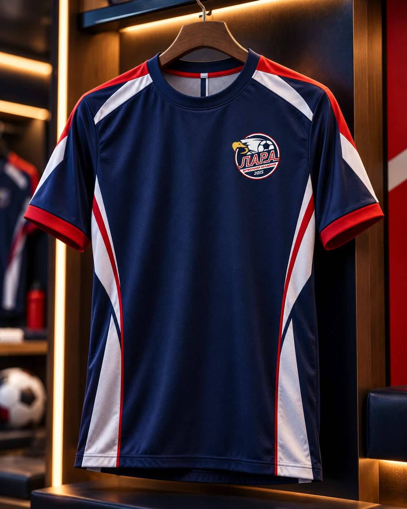
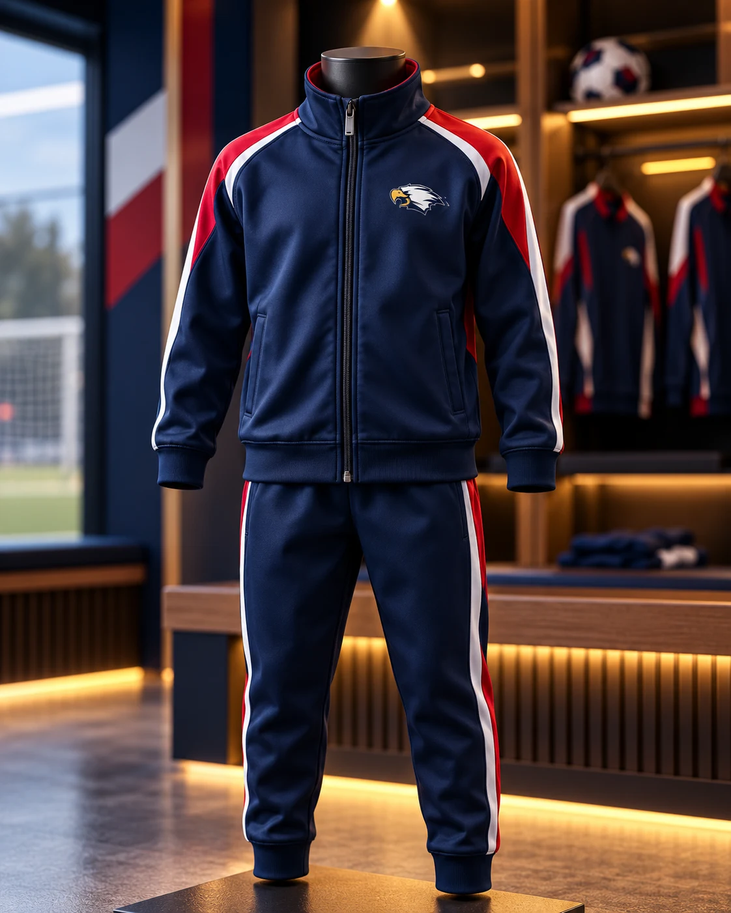

ЛОГОТИПЫ / ФИРМЕННЫЙ СТИЛЬ
ЛАРА
«ЛАРА» — футбольная академия в Улан-Удэ. Здесь юные футболисты развивают мастерство и приобретают опыт командной игры, участвуя в республиканских соревнованиях.

Эмблема
Для академии разработана айдентика, которая объединяет спортивную экипировку и клубную атрибутику. В основе эмблемы — орёл и футбольный мяч. Полная версия знака представляет академию, а отдельное изображение орла используется на одежде и аксессуарах.

Командная форма
Тёмно-синяя основа, контрастные красные и белые линии формируют узнаваемый образ команды. Цвета и графика объединяют игровую форму и тренировочные костюмы.




За пределами поля
Фирменный стиль продолжается на сумках, рюкзаках, кепках и сувенирах. Крупные изображения и детали вышивки показывают, как графика работает в разных материалах и масштабах.


Единый образ
В результате создан единый визуальный образ академии — на футбольном поле, тренировках и за пределами стадиона.